本文为翻译文章，点击查看原文。
在本文中，我将解释如何在 Fn 函数之间使用 Istio 服务网格实现基于版本的流量路由。
我将首先解释 Istio 路由的基础知识以及将 Fn 部署和运行在 Kubernetes 上的方式。最后，我将解释我是如何利用 Istio 服务网格及其路由规则在两个不同的 Fn 函数之间路由流量的。
请注意，接下来的解释非常基本和简单——我的目的不是解释 Istio 或 Fn 的深入细节，而是解释得足够清楚，让您可以了解如何使自己的路由工作。
Istio 路由入门
让我花了一点时间来解释 Istio 路由如何工作。Istio 使用 sidecar 容器（ istio-proxy ）注入到您部署的应用中。注入的代理会劫持所有进出该 pod 的网络流量。部署中所有这些代理的集合与 Istio 系统的其他部分进行通信，以确定如何以及在何处路由流量（以及其他一些很酷的事情，如流量镜像、故障注入和断路由）。
为了解释这是如何工作的，我们将开始运行一个 Kubernetes 服务（myapp）和两个特定版本的应用程序部署（v1和v2）。
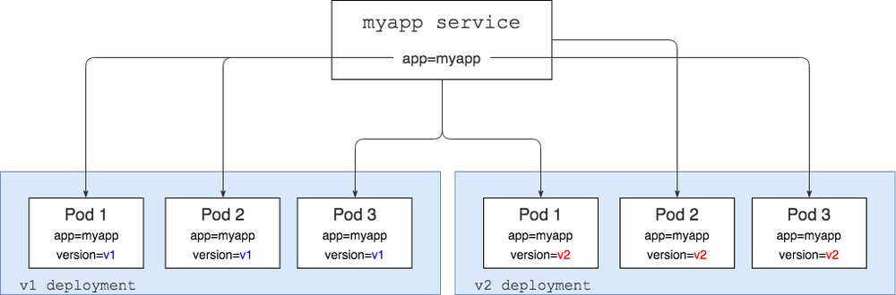
在上图中，我们有 myapp 一个选择器设置为 Kubernetes 的服务 app=myapp ，这意味着它将查找具有 app=myapp 标签集的所有 Pod，并将流量发送给它们。基本上，如果您执行此操作，curl myapp-service 您将从运行 v1 版本应用程序的 pod 或运行 v2 版本的 pod 获得响应。
我们还有两个 Kubernetes 部署，这些部署myapp运行了 v1 和 v2 代码。除 app=myapp 标签外，每个 pod 还将version标签设置为 v1或 v2。
上图中的所有内容都是可以从 Kubernetes 中开箱即用的。
进入 Istio 环节。为了能够做到更智能化和基于权重的路由，我们需要安装 Istio，然后将代理注入到我们的每个容器中，如下面的另一个图片所示。下图中的每个 pod 都有一个带有 Istio 代理的容器（用蓝色图标表示）和运行应用的容器。在上图中，我们只有一个容器在每个 pod 中运行——应用程序容器。
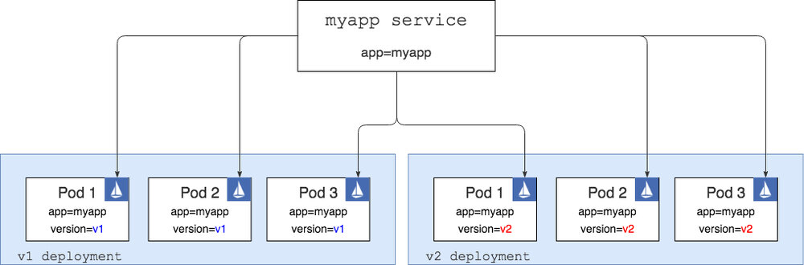
请注意，Istio 比图中显示的要多得多。我没有展示在 Kubernetes 集群上部署的其他 Istio Pod 和服务——注入的 Istio 代理与这些 Pod 和服务进行通信，以便知道如何正确路由流量。有关 Istio 不同部分的深入解释，请参阅此处的文档。
如果我们现在可以调整myapp服务，那么我们仍然会得到与第一个图中的设置完全相同的结果：来自v1和v2 pod 的随机响应。唯一的区别在于网络流量从服务流向Pod的方式。在第二种情况下，对服务的任何调用都在 Istio 代理中结束，然后代理根据定义的路由规则决定将流量路由到哪里。
就像 Kubernetes 一样，Istio 路由规则也是使用 YAML 定义的，它们看起来像这样：
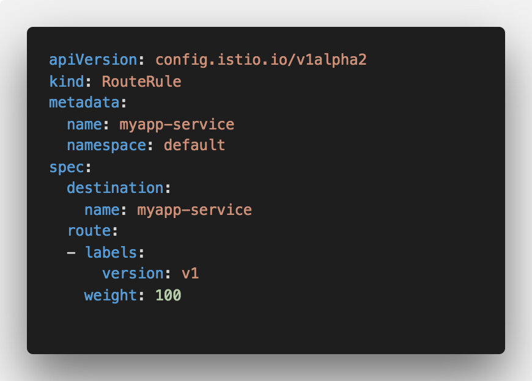
上述路由规则接收请求myapp-service并将其重新路由到标记为 Pod 的请求version=v1 。这就是具有上述路由规则的图表的样子：
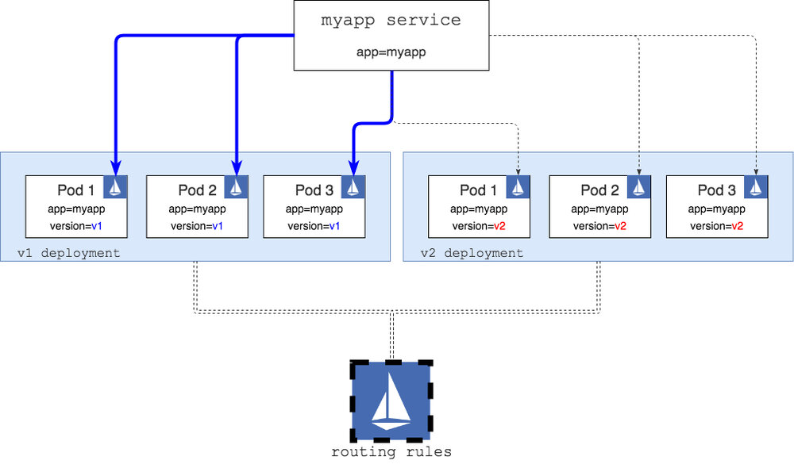
底部的 Istio 大图标代表 Istio 部署/服务，其中包括正在读取的路由规则。这些规则然后用于重新配置在每个 pod 内运行的 Istio 代理 sidecar。
有了这个规则，如果我们 curl 服务，我们只能从标有标签为 version=v1（图中的蓝色连接器描述）的 pod 获取响应。
现在我们已经了解了路由如何工作，我们可以研究 Fn ，部署它并查看它是如何工作的，以及我们是否可以使用 Istio 以某种方式设置路由。
在 Kubernetes 上的 Fn 函数
我们将从 Kubernetes 上的一些 Fn 片段的基本图表开始。您可以使用 Helm chart 将 Fn 部署在您的 Kubernetes 集群之上。
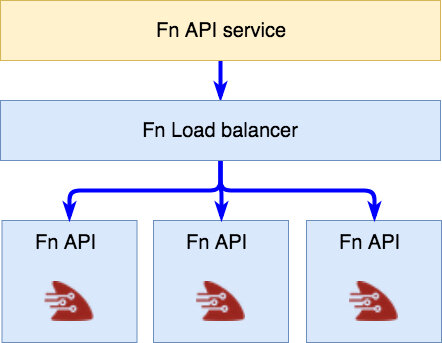
图表顶部的 Fn API 服务是 Fn 的入口点，它用于管理您的 Function（创建，部署，运行等）——这是FN_API_URL在 Fn 项目中引用的 URL 。
该服务反过来将调用路由到 Fn 负载均衡器（即标记为 role=fn-lb 的任何 Pod ）。然后，负载均衡器会发挥神奇的作用，并将调用路由到fn-service pod 的实例。这作为 Kubernetes DaemonSet 的一部分部署，并且通常每个 Kubernetes 节点都有一个该 pod 的实例。
有了这些简单的基础知识，让我们创建并部署一些 Function，并考虑如何进行流量路由。
创建和部署函数
如果您想遵循下面的教程，请确保已将 Fn 部署到您的 Kubernetes 群集（我正在使用 Docker for Mac ）并安装 Fn CLI 并运行以下命令来创建应用程序和一些功能：
# 创建app文件夹
mkdir hello-app && cd hello-app
echo "name: hello-app" > app.yaml
# Create a V1 function
mkdir v1
cd v1
fn init --name v1 --runtime go
cd ..
# Create a V2 function
mkdir v2
cd v2
fn init --name v2 --runtime go
cd ..
使用上述命令，您已创建应用程序的根目录，名为hello-app。在这个目录中，我们创建了两个目录，每个目录下都有一个 Function：v1和一个**v2。**Boilerplate Go Function 使用fn init 指定使用 Go 作为运行时。这是目录的结构：
.
├── app.yaml
├── v1
│ ├── Gopkg.toml
│ ├── func.go
│ ├── func.yaml
│ └── test.json
└── v2
├── Gopkg.toml
├── func.go
├── func.yaml
└── test.json
打开这func.go两个目录并更新返回的消息以包含版本号——我们这样做的原因是可以快速区分哪个 Function 被调用。以下是v1的func.go的样子（Hello V1）：
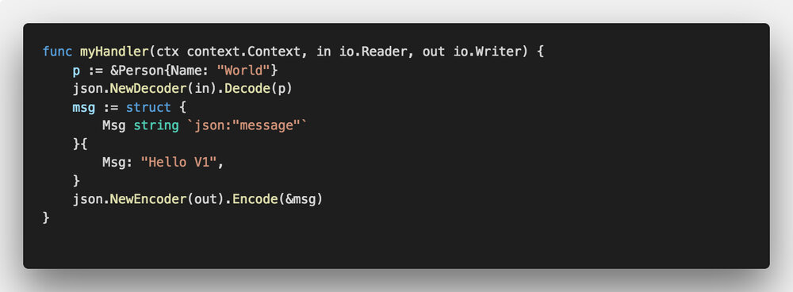
更改完成后就可以将这些功能部署到在 Kubernetes 上运行的 Fn 服务。为此，您必须将FN_REGISTRY环境变量设置为指向您的 Docker 镜像仓库的用户名。
因为我们在 Kubernetes 集群上运行 Fn，所以我们不能使用本地构建的映像 - 它们需要推送到Kubernetes集群可以访问的 Docker 镜像仓库。
现在我们可以使用 Fn CLI 来部署这些函数：
FN_API_URL=http://localhost:80 fn deploy --all
上面的命令假设 Fn API 服务暴露在 localhost:80 上（默认情况下，如果您在 Docker for Mac 中使用Kubernetes 支持）。如果使用不同的集群，则可以将 FN_API_URL 替换为 fn-api 服务的外部 IP 地址。
在 Docker 构建和推送完成之后，我们的函数就被部署到 Fn 服务中了，我们可以尝试调用它们。
部署到 Fn 服务的任何函数都有一个唯一的 URL，其中包含应用程序名称和路由名称。通过我们的应用程序名称和路由，我们可以访问已部署的函数 http://$(FN_API_URL)/r/hello-app/v1 。所以，如果我们想调用v1路由，我们可以这样做：
$ curl http://localhost/r/hello-app/v1
{"message":"Hello V1"}
同样，调用v2路由将返回 Hello V2 消息。
但函数在哪里运行？
如果您在调用函数时查看正在创建/删除的 pod ，您会注意到没有真正改变——即没有 pod 创建或删除。原因是 Fn不会像 Kubernetes pod 一样创建函数 ，因为这太慢了。相反，所有 Fn 函数的部署和调用都发生在 fn-service pod 中。然后，Fn 负载均衡器负责部署和路由到这些 pod ，以最优化的方式部署/执行函数。
因此，我们没有函数的 Kubernetes pod/service ，但 Istio 要求我们拥有可以路由到的服务和 pod。在这种情况下，我们如何使用 Istio 呢 ？
思考
让我将函数从图片中解放出来，并思考为了能让 Istio 路由工作我们需要做什么：
- Kubernetes 服务—— hello 应用程序的入口点
- 针对 hello-app v1 的 Kubernetes deployment
- 针对 hello-app v2 的 Kubernetes deployment
正如 Istio 路由入门一节开头部分所解释的，我们还必须在两个 deployment 中添加一个代表版本和 app=hello-app 的标签。服务上的选择器会选择 app=hello-app 的标签——特定于版本的标签将由 Istio 路由规则添加。
为此，每个特定于版本的部署都需要最终以正确的路由（例如/r/hello-app/v1）调用 Fn 负载均衡器。由于一切都在 Kubernetes 中运行，我们知道 Fn 负载均衡器服务的名称，所以我们可以做到这一点。
因此，我们需要一个位于部署中的容器，它在调用时将呼叫转发到特定路径上的 Fn 负载均衡器。
这是图中表示的上述想法：
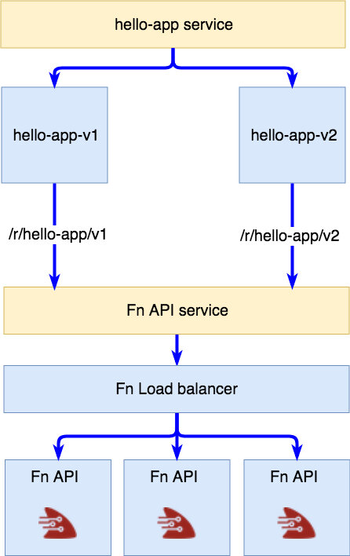
我们有一个服务代表我们的应用程序和两个特定于版本的部署，并直接路由到 Fn 服务中运行的 Function 。
简单的代理
为了实现这一点，我们需要某种代理服务器来接收所有调用并将它们转发给 Fn 服务。下面是一个简单的Nginx 配置，它完全符合我们的要求：
events {
worker_connections 4096;
}
http {
upstream fn-server {
server my-fn-api.default;
}
server {
listen 80;
location / {
proxy_pass http://fn-server/r/hello-app/v1;
proxy_set_header X-Real-IP $remote_addr;
proxy_set_header X-Forwarded-For $remote_addr;
proxy_set_header Host $host;
}
}
}
配置解释：调用 /，就将其转发到 http://fn-server/r/hello-app/v1（fn-server定义为上游），解析到my-fn-api.default（这是 fn-api 在 Kubernetes 的 default namespace 中的服务名称）。
我用一个脚本创建了一个 Docker 镜像，该脚本基于您传入的上游和路由值生成 Nginx 配置。该镜像在 Docker hub 上提供，您可以在这里查看源代码。
部署到 Kubernetes
现在，我们可以创建 Kubernetes YAML 文件，包括 service、deployment 以及我们将用于访问函数的 ingress。
以下是 deployment 文件的摘录，以显示我们如何设置UPSTREAM、 ROUTE 环境变量和设置标签。
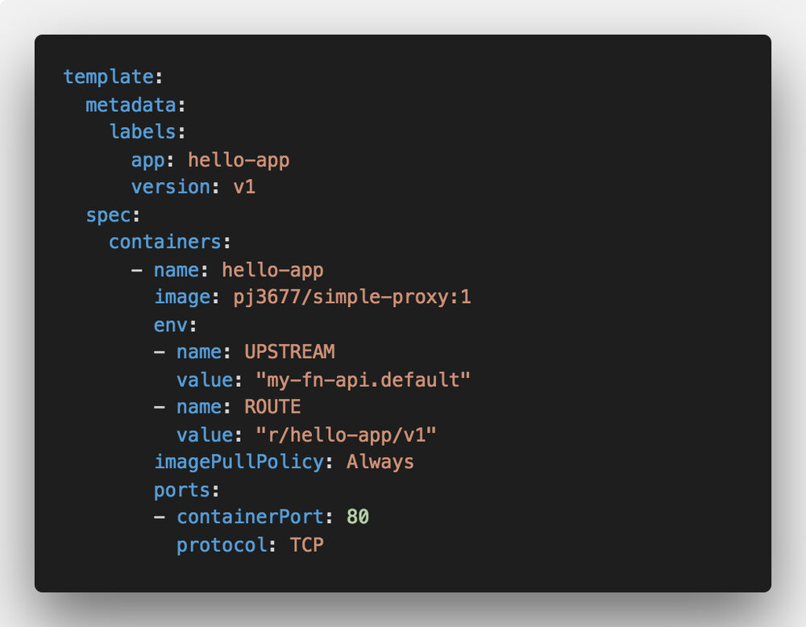
UPSTREAM和ROUTE环境变量由 simple-proxy 容器读取，Nginx 的配置文件会根据这些值生成。
服务的 YAML 文件也没什么特别，我们只是将选择器设置为app: hello-app ：
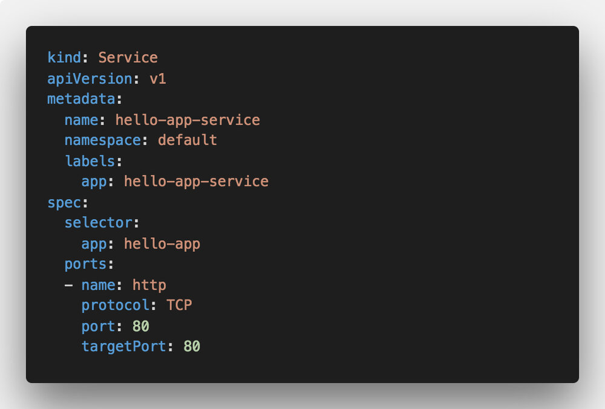
最后一部分是 Istio ingress，我们设置了将所有传入流量路由到后端服务的规则：
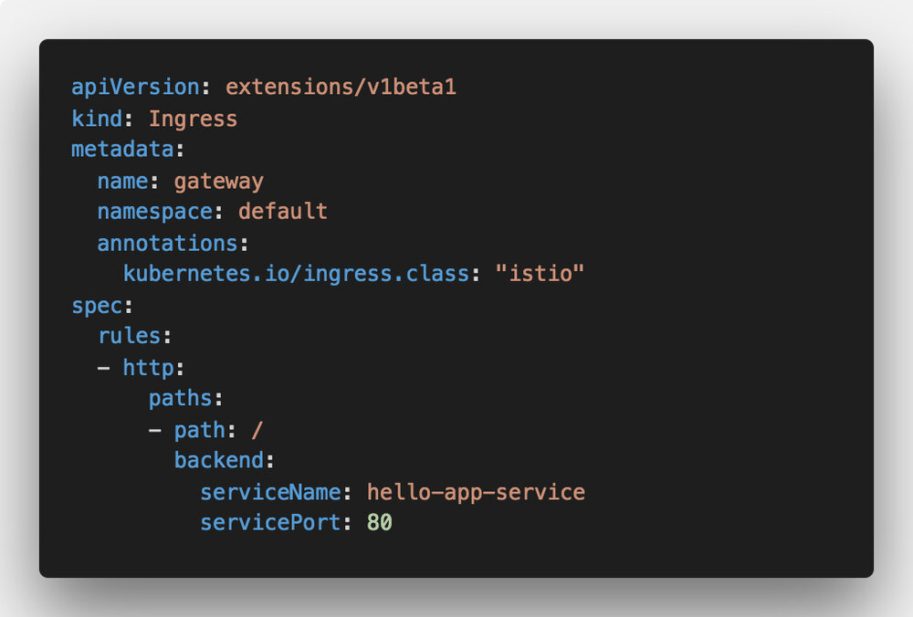
要部署这些，您可以使用kubectl来部署 ingress 和服务，使用istioctl kube-inject来注入 Istio 代理。
随着一切部署完毕，你应该会得到以下 Kubernetes 资源：
- hello-app-deployment-v1（使用指向 v1 路由的 simple-proxy 镜像部署）
- hello-app-deployment-v2（使用指向 v2 路由的 simple-proxy 镜像部署）
- hello-app-service（在 hello-app 部署中针对 v1 和 v2 pod 的服务）
- 指向 hello-app-service 的 ingress，并给增加注解，将 ingress.class 赋值为 “istio”
现在，如果我们调用 hello-app-service 或调用 ingress ，我们应该从 v1 和 v2 函数中获得随机响应。以下是对 ingress 进行调用的示例输出：
$ while true; do sleep 1; curl http://localhost:8082;done
{“message”:”Hello V1"}
{“message”:”Hello V1"}
{“message”:”Hello V1"}
{“message”:”Hello V1"}
{“message”:”Hello V2"}
{“message”:”Hello V1"}
{“message”:”Hello V2"}
{“message”:”Hello V1"}
{“message”:”Hello V2"}
{“message”:”Hello V1"}
{“message”:”Hello V1"}
{“message”:”Hello V1"}
{“message”:”Hello V2"}
你会注意到我们随机获得了 V1 和 V2 的响应 - 这正是我们现在想要的！
Istio 规则
在我们的服务和部署已启动并运行（和正在运行）的情况下，我们可以为 Fn 函数创建 Istio 路由规则。让我们以一个简单的 v1 规则开始，该规则将所有对 hello-app-service 的调用（weight: 100）路由到标记为的 v1的 pod 上：
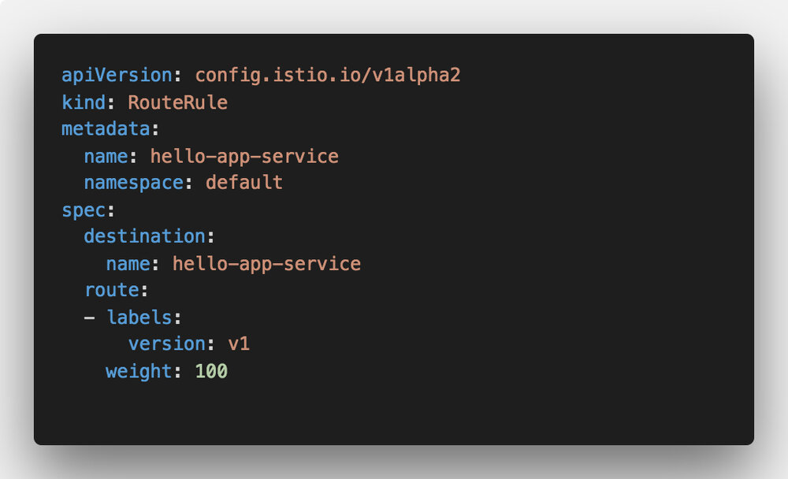
您可以通过运行应用此规则kubectl apply -f v1-rule.yaml。查看运行中的路由的最佳方法是运行一个连续调用端点的循环——这样您就可以看到混合（v1/v2）和全部v1的响应。
就像我们将 v1 的路由规则定义为 100% 的权重那样，我们可以类似地定义一条规则将所有内容路由到v2，或者将规则路由 50％ 的流量 v1 和 50％ 的流量v2，如下面的演示所示。
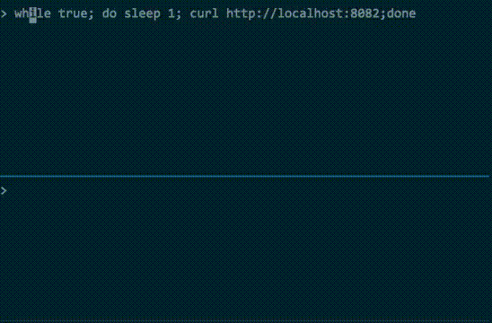
一旦我证明了这一点，简单的 curl 命令，好了，我停下来：）
幸运的是，Chad Arimura 在他关于 DevOps 对无服务器的重要性的文章中进一步说明了这一点（警报：DevOps 不会消失）。他使用 Spinnaker 对在实际 Kubernetes 集群上运行的 Fn 函数进行加权蓝绿部署。看看他的演示视频：

结论
每个人可能都会认同服务网格在无服务函数领域的重要性。如果使用服务网格（如路由、流量镜像、故障注入和其他一些东西），可以获得许多好处。
我看到的最大挑战是缺乏以开发人员为中心的工具，让开发人员能够利用所有这些漂亮和酷炫的功能。设置这个项目和演示来运行几次并不太复杂。
但是，这是两个函数，它们就返回一个字符串，并没有别的。这是一个简单的演示。考虑运行数百或数千个函数并在它们之间建立不同的路由规则。然后管理所有这些函数。或者推出新版本并监控故障。
我认为在进行函数管理、服务网格管理、路由、其他酷炫的功能方面有很多的机会（和挑战），因此对于每个参与者都很直观。
谢谢阅读
对这篇文章的任何反馈我都非常欢迎！你也可以在 Twitter 和 GitHub 上关注我。如果你喜欢这一点，并希望在我写更多东西时得到通知，你应该订阅我的通讯！